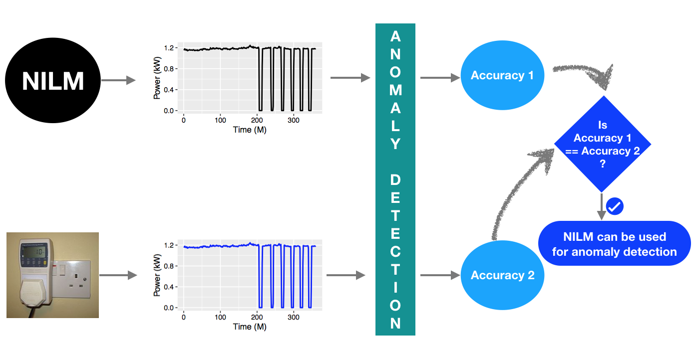
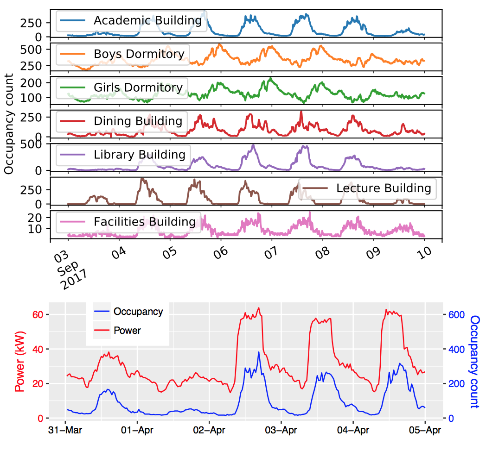
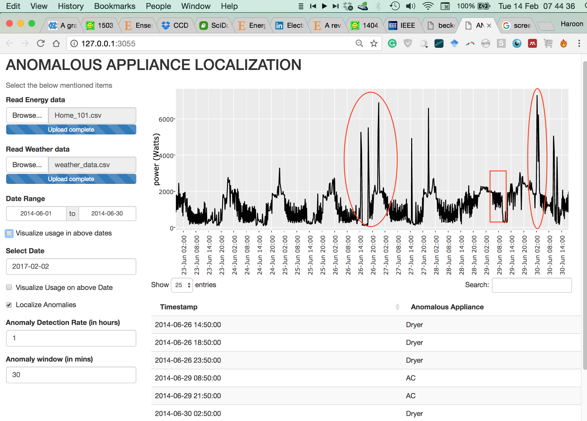
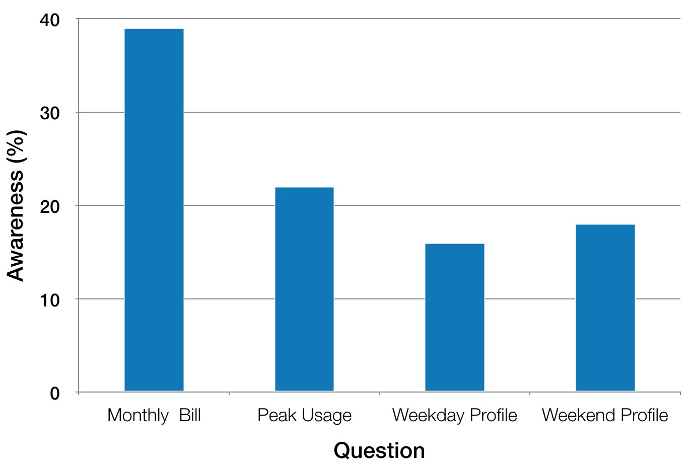
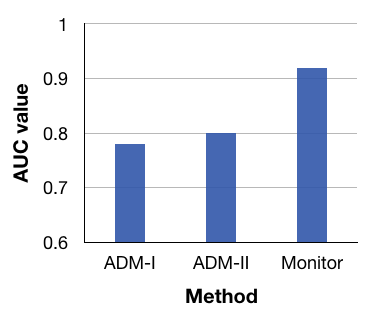

|
Projects
Can NILM be used for Identifying Anomalous Appliances?
|
 |
Identification of faulty appliance behaviour in real time can signal energy wastage and the need for appliance servicing or replacement leading to energy savings. The problem of appliance fault or anomaly detection has been tackled vastly in relation to submetering, which is not scalable since it requires separate meters for each appliance. At the same time, for applications such as energy feedback, Non-intrusive load monitoring (NILM) has been recognised as a scalable and practical alternative to submetering. However, the usability of NILM for anomaly detection has not yet been investigated. Since the goal of NILM is to provide energy consumption estimate, it is unclear if the signal fidelity of appliance signatures generated by state-of-the-art NILM is sufficient to enable accurate appliance fault detection. In this project, we attempt to determine whether appliance signatures detected by NILM can be used directly for anomaly detection. Please read this paper for details.
|
Releasing 52 months campus-scale energy and occupancy dataset
|
 |
Efficient energy consumption at the building level is vital for sustainability. Providing energy efficient systems and solutions requires an understanding of how energy gets consumed. However, there is a general lack of large-scale open datasets about the energy consumptions of buildings, which hinders the research. The recent emergence of smart energy meters makes it possible to collect such data, which can then be used for analysis.
In this project, we release I-BLEND, 52 months of electrical energy dataset at a one-minute sampling rate collected from commercial and residential buildings of our institute campus. Also, we provide occupancy dataset at a 10-minute sampling rate for each of the campus buildings. Read this paper for details.
|
Identifying Anomalous Appliances using Aggregate Smart meter Data
|
 |
Recent works in the energy domain leverage smart meter data to find anomalies; however, such works do not identify the appliance causing the anomaly. In this project, we propose a technique named Rimor that addresses the limitation. Rimor predicts the energy consumption of a home using historical energy data and contextual information and flags an anomaly when the actual energy consumption deviates significantly from the predicted consumption. Further, it identifies anomalous appliance(s) by using easy-to-collect appliance power ratings. We evaluated it on four real-world energy datasets containing 51 homes and found it to be 15% more accurate in detecting anomalies as compared to four other baseline approaches. Rimor reports an appliance identi cation accuracy of 82%. Read this paper for further details.
|
Understanding Energy Awareness of Indian Consumers
|
 |
India is a power deficit country. One of the solutions to manage demand and supply is energy efficiency, for example, reducing energy consumption by existing consumers. But consumers can reduce their consumption only if they understand how do they consume energy. To understand the energy awareness of middle-class Indian consumers, we conducted a paper-based, door-to-door survey at one of the faculty residential buildings (41 apartments) of IIT Bombay. The questionnaire has four questions and the figure on the left shows that the awareness percentage of the participants corresponding to these questions. From the findings, we argue that utilities should take lead to make consumers energy aware by installing energy consumption displays and do smart scheduling of consumer's appliances. Read this paper on other interesting findings.
|
A quantification Metric to Summarise Consistency in Consumer’s Energy Consumption
Several programs such as Demand Response are run by electrical utilities to manage energy demand. This involves selection of handful consistent consumers from a city of consumers. By consistent, we mean a consumer follows the same pattern in energy consumption over consecutive days. Currently, utilities use clustering-based approach for such consumer selection. This selection approach is a bit difficult since it requires to set the number of clusters. To handle this problem we propose a simple metric which takes historical energy consumption as input and outputs a consistency score in the range -1. The proposed metric does not require tuning parameters for different consumers. The following figure shows consistency scores (as figure title) for four different consumers. Read 1 and 2 papers for the details.
Anomaly Detection in Building’s Energy Consumption at Aggregate Meter Level
|
 |
This work finds the anomalous instances in building’s electrical energy consumption. It takes aggregate smart meter data as input and flags the consumption as anomalous or non-anomalous. The intent is to inform the building administrator about these anomalous instances promptly without resulting further energy wastage. Several anomaly detection techniques exist in building’s domain but our analysis shows that most of them result in a high number of false positive alarms and hence are not reliable. Our proposed method, Monitor, reduces false alarms significantly as compared to existing methods as shown in the figure on the left. Read our paper for details.
|
An IoT Noise Monitoring System
In this project, we created an end-to-end IoT system, which monitors the ambient noise levels at a sampling rate of 2 seconds. The collected noise readings are further sent to a cloud platform, where we analyze the data and calculate various statistical parameters. Furthermore, the noise levels assoicated with inferred higher level abstractions are displayed to the end user via a mobile application. The objective of this project was to create a relaible end to end IoT system.
Internet traffic classification using Machine Learning
In this project we used two different approaches, i.e., supervised learning and unsupervised learning to classify Internet traffic. Among supervised techniques we used Naive Bayes and CART and among unsupervised techniques K-Means and Expectation Maximization were used. Data sets for the classification were taken from WAND group at the University of Waikato. We spend most of the time in hand classification using Wireshark tool. Matlab 2013a implementations of the mentioned algorithms were used to classify the fine grained, hand classified data sets.
Analysis of Ad hoc Networks
In this project I did five different routing attacks, i.e., (i) Flooding, (ii) Blackhole, (iii) Rushing, (iv) Impersonation, and (v) Routing table poisoning on Ad hoc on demand Distance Vector (AODV) and on Dynamic Source Routing (DSR) protocols. Furthermore, detection of each attack and the corresponding countermeasures taken were implemented for both AODV and DSR. All the simulations were performed using EXata/Cyber simulator.
Dead Reckoning Localization Technique for Mobile Wireless Sensor Networks
Localization in wireless sensor networks (WSNs) not only provides a node with its geographical location but also a basic requirement for other applications such as geographical routing. Although a rich literature is available for localization in static WSN, not enough work is done for mobile WSNs, owing to the complexity due to node mobility. Most of the existing techniques for localization in mobile WSNs uses Monte-Carlo localization (MCL), which is not only time-consuming but also memory intensive. They, consider either the unknown nodes or anchor nodes to be static. In this paper, we propose a technique called Dead Reckoning Localization for mobile WSNs (DRLMSN). In the proposed technique all nodes (unknown nodes as well as anchor nodes) are mobile. Localization in DRLMSN is done at discrete time intervals called checkpoints. Unknown nodes are localized for the first time using three anchor nodes. For their subsequent localizations, only two anchor nodes are used. The proposed technique estimates two possible locations of a node Using Bezouts theorem. A dead reckoning approach is used to select one of the two estimated locations. We have evaluated DRLMSN through simulation using Castalia simulator, and is compared with a similar technique called RSS-MCL. Read this paper for the details.
Localization of Static Wireless Sensor Networks
Localization of nodes in a sensor network is essential for the following two reasons: (i) to know the location of a node reporting the occurrence of an event, and (ii) to initiate a prompt action whenever necessary. Different localization techniques have been proposed in the literature. Most of these techniques use three location aware nodes for localization of an unknown node. Moreover, the localization techniques also differ from environment to environment. In this technique, we proposed a localization technique for grid environment. Sensor nodes are deployed in a grid pattern and localization is achieved using a single location aware or anchor node. We have identified three types of node in the proposed scheme: (i) Anchor node, (ii) Unknown node and (iii) Special node. First, the special nodes are localized with respect to the anchor node, then the unknown nodes are localized using trilateration mechanism. We have compared the proposed scheme with an existing localization algorithm for grid deployment called Multiduolateration. Read this paper for the details
|